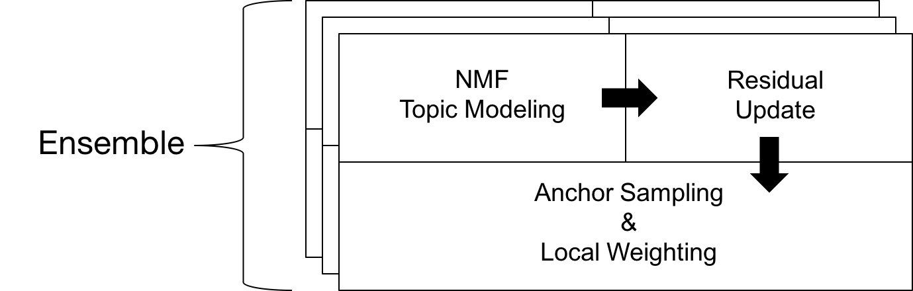

L-EnsNMF: Boosted Local Topic Discovery via
Ensemble of Nonnegative Matrix Factorization
Sangho Suh, Jaegul Choo, Joonseok Lee, Chandan K. Reddy

Table of Contents
- Motivation (why)
- Proposed Solution (what)
- Future Work(how)
Motivation


global topics that give general, redundant information
Local topic discovery to extract
more specific, informative topics?
Proposed Solution
(Intuition)


1) ITERATE -> Ensemble of NMF
2) BOOST & SUPPRESS -> Local weighting scheme
=> Localized Ensemble of Nonnegative Matrix Factorization (L-EnsNMF)
Proposed Solution
(Details)


Overview

1) Residual Update -> Find unexplained parts
2) Anchor Sampling & Local weighting
-> Reveal unexplained parts and suppress explained parts
3) Ensemble -> Repeat this iteration
Residual Matrix
Find unexplained topics using residual matrix, R
Anchor Sampling
Sample unexplained document/keyword
Local Weighting
Reveal local topics & suppress global topicsEnsemble on Gradient Boosting
Repeat this process using gradient (i.e., residual values) Proposed Solution
(Quantitative Experiment)

Proposed Solution
(Qualitative Experiment)
Topic examples from Twitter dataset
(from New York City in June 2013)

We generated 100 topics (10 keywords each) but only L-EnsNMF extracted local, specific keywords, e.g., ‘hurrican’, ‘sandi’, ‘ireland.’
Topic examples from Twitter dataset
(from New York City in June 2013)

A search for related web documents with the query ‘hurricane sandy ireland’ led to the discovery of the local news that the Ireland football team visited New York City in June 2013 to boost a community hit by Hurricane Sandy in 2012.
Future Work
User-driven Topic Modeling
Muchas Gracias
Questions?
sh31659@gmail.com